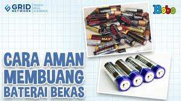
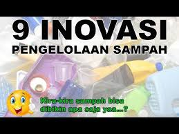
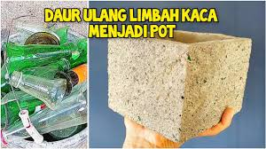
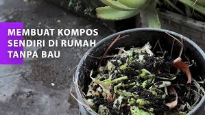
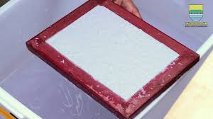
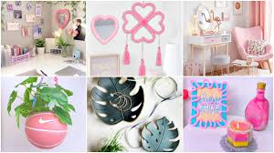
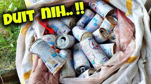
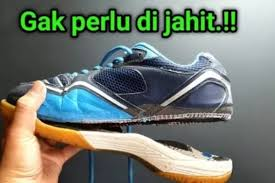
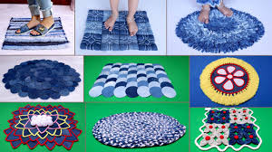

Cara Aman Membuang Baterai Bekas - Fakta Menarik

Cara Aman Membuang Baterai Bekas - Fakta Menarik

9 INOVASI PENGOLAHAN SAMPAH PLASTIK

Daur Ulang Limbah Pecahan Kaca Menjadi Pot Bunga
Tips Mengolah Sampah Masker

Cara membuat kompos dari sampah rumah tangga tanpa bau

INSPIRASI POSITIF: Bagaimana Cara Mendaur Ulang Kertas

15 DIY - IDE DEKORASI KAMAR PINTEREST YANG AKAN ANDA SUKAI

BURUAN CARI KALENG SUSU BEKAS !! BISA JADI CUAN !!

Banyak yang belum tau.!! Cara memperbaiki/lem sepatu yang jebol agar hasilnya kuat tanpa di jahit

10 Beautiful Doormat Making || Old Clothes Reuse Idea || Jeans Handmade Things